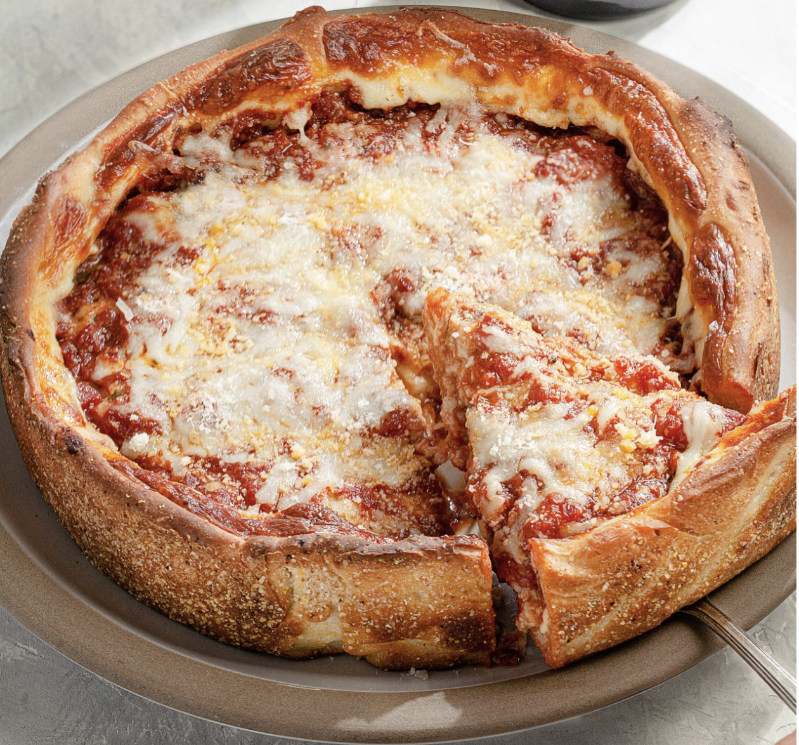
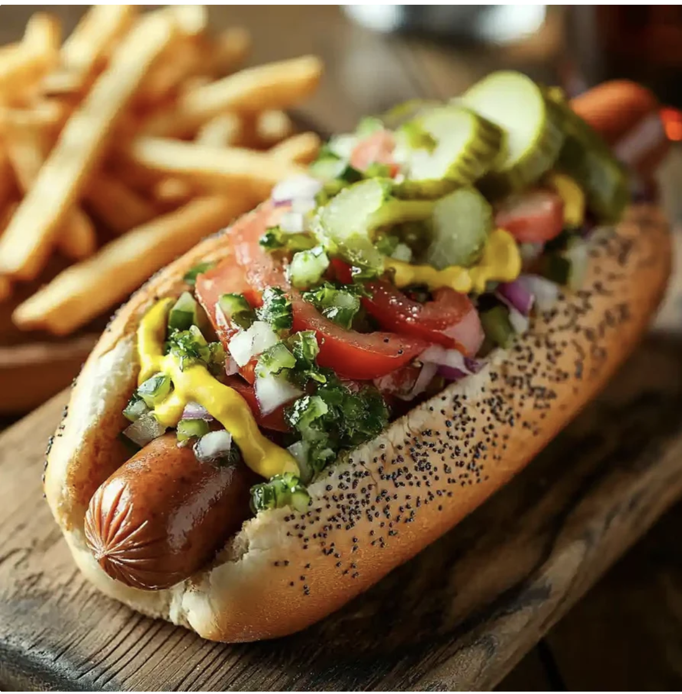

시카고에서 맛볼 음식

Chicago Deep-Dish Pizza
높은 가장자리의 두꺼운 도우 안에 치즈와 토핑을 넣고, 그 위를 진한 토마토소스로 덮어 구워내는 시카고의 대표적인 음식입니다. 일반적인 얇은 피자보다 묵직하고 든든한 한 끼에 가깝습니다.
이미지 출처: Colavita Recipes
Chicago-Style Hot Dog
소시지와 함께 토마토, 양파, 피클, 렐리시와 머스터드 등의 토핑을 풍성하게 올린 음식입니다. 신선하고 아삭한 채소와 짭짤한 소시지의 조합이 특징입니다.
이미지 출처: A Beautiful Plate
Chicago-Style Italian Beef Sandwich
얇게 썬 로스트비프를 진한 고기 육수에 촉촉하게 적신 뒤, 부드러운 이탈리안 롤에 푸짐하게 넣어 만든 시카고의 대표 샌드위치입니다. 매콤한 이탈리아식 절임 채소인 자르디니에라 또는 달콤하게 볶은 피망을 곁들여 먹습니다.
이미지 출처: Mezzetta